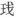

洞 仙 歌
晁补之
泗州中秋作①
青烟幂处② ，碧海飞金镜，永夜闲阶卧桂影。露凉时，零乱多少寒螀③ ，神京远，惟有蓝桥路近④ 。 水晶帘不下⑤ ，云母屏开⑥ ，冷浸佳人淡脂粉。待都将许多明，付与金尊，投晓共流霞倾尽⑦ 。更携取胡床上南楼⑧ ，看玉做人间，素秋千顷。
【注释】
①泗州：治所在临淮，今江苏泗洪东南，盱眙对岸。徽宗大观四年（1110），晁补之出党籍，起知达州，改泗州，卒于任上。 ②幂：音密，笼罩，覆盖。 ③寒螀：寒蝉。 ④蓝桥：在陕西蓝田县东南，唐裴航巧遇云英并与之结为夫妻处。 ⑤水晶帘：串连水晶编织而成的帘子。 ⑥云母屏：由云母石装饰制成的屏风。 ⑦流霞：神仙喝的酒名，泛指美酒。 ⑧胡床：坐具，即交椅。南楼：用《世说新语》典故：晋庚亮在武昌，与诸佐吏殷浩之徒乘夜月共上南楼，据胡床咏谑。
【语译】
在青烟笼罩之处，在碧色的大海上，飞升起一面明亮的镜子。长夜里，在寂静无人的阶台上，躺着桂花树的影子。露水带来凉意时，有多少寒蝉的叫声乱成一片。汴京遥远，只有通往与佳人相会的地方的路倒是很近的。
水晶帘子未放下来，云母屏风也敞开着，淡敷脂粉的美人正沉浸在清冷的月光里。等到月儿把许多光明都投入金杯之中，天将晓时，便将它与美酒一起喝尽。我们还要搬了交椅上南楼去，一同观赏白玉做的世界，看那银光普照千顷大地。
【赏析】
毛晋谓此词系晁补之之绝笔。其《琴趣外篇跋》云：“无咎虽游戏小词，不作绮艳语，殆因法秀禅师谆谆戒山谷老人，不敢以笔墨劝淫耶？大观四年，卒于泗州官舍。自画山水留春堂大屏上，题云：‘胸中正可吞云梦，

（亦作“醆”，酒器。）底何妨对圣贤（称酒之清者为圣人，浊者为贤人）？有意清秋入衡霍（山名），为君无尽写江天。’又咏《洞仙歌》一阕，遂绝笔。”有人因词中有“蓝桥”“佳人”之语，遂以为此写作者“与妓女往还以排遣日月”，未免唐突词人。唐宋士大夫狎妓固属寻常，或借红巾翠袖以寄托失意牢骚，然此词除“神京远”等语外，实无愤激怨怼之言；无咎磊落卓奇，不作绮语，岂有临终之咏，及念念不忘青楼红粉之理？观佳人之居，水晶帘卷，云母屏开，其人淡妆轻抹，孤芳幽独，又岂是艳妆浓抹之乐籍女子可比。诗人吟咏明月，以美人寄兴者颇多，此“虽有涉于篇什，实不接于风流”（李商隐语）也。词以月出写起，描摹中秋清景如画。以“神京远”二句，说自己官游僻远，名利之心已淡，此处虽无京城佳节之热闹，亦不乏人情之温馨。以“蓝桥”故事引出“佳人”，写一位贞静高雅的美人形象，在无从考实其身份的情况下，不妨视作词人的一种理想志趣的寄托。末了，以举杯邀月，共度良宵；登楼咏谑，一览中秋月色下之神奇世界作结，所写景观，呼应发端。故苕溪渔隐赞其如“常山之蛇，救首救尾”；李攀龙亦云：“此词前后照应，如织锦然，真天孙（织女）手也。”（《草堂诗余隽》）